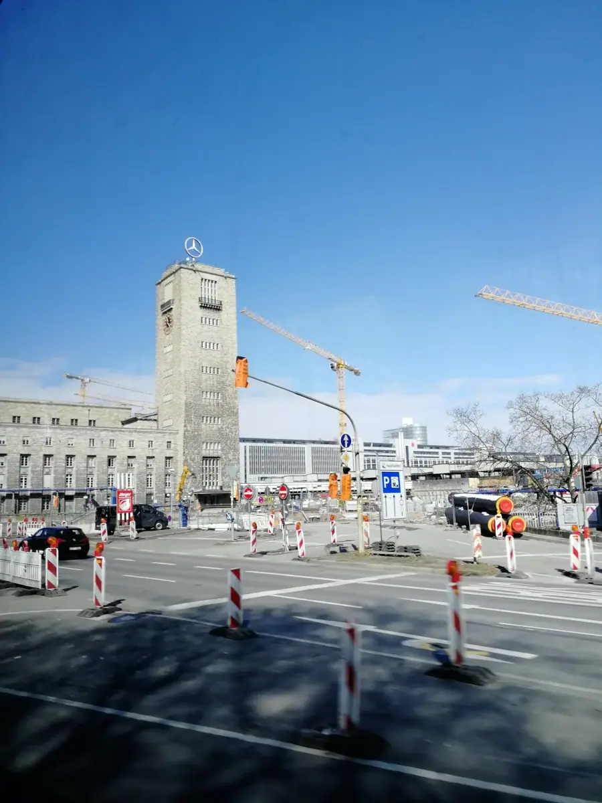
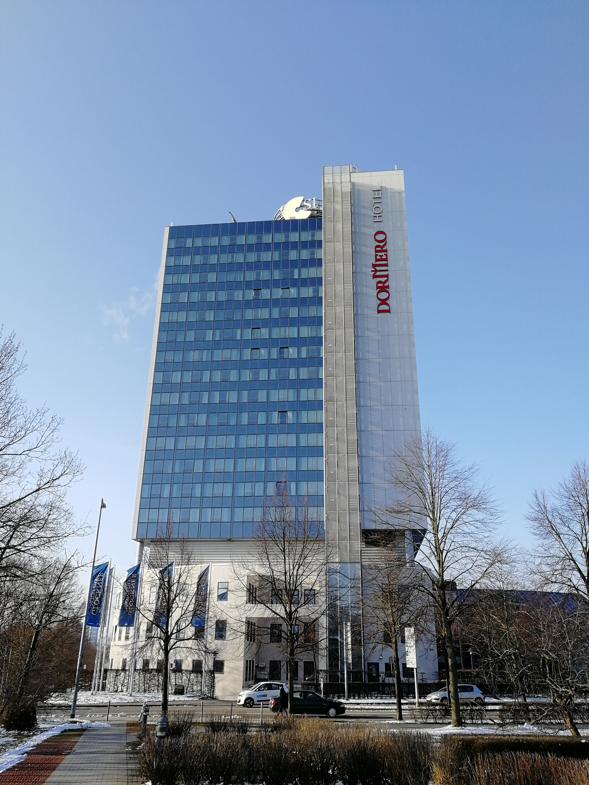
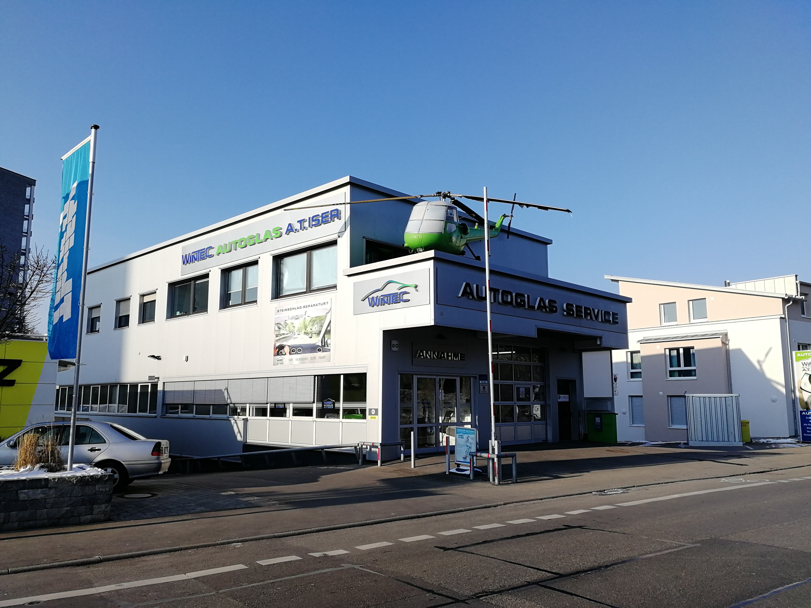
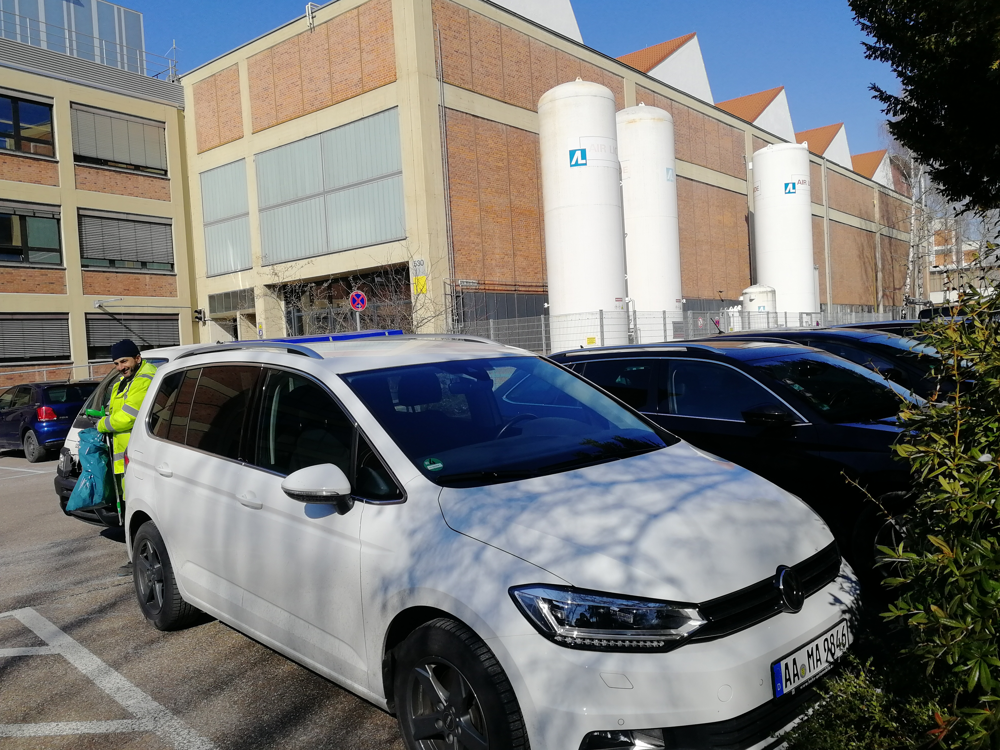
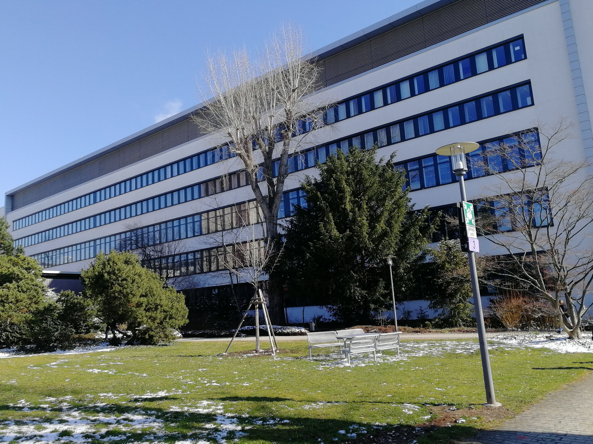

斯图加特·诺托（第四次）：家族退到幕后，一位中国工程师，和一道 U 槽与 C 槽之间的鸿沟
Roto in Stuttgart, the fourth time — family behind the curtain, a Chinese engineer, and the gap between U-track and C-track.

（2018 年 · 德国 · 斯图加特 · 诺托 Roto 总部）
第四次回到莱因费尔登-埃希特丁根，连总部前台都换了人——这种细节反而是最真实的「物是人非」：建筑没变，品牌没变，但具体到每一次踏进这扇门迎接你的人，已经完全不是同一批了。


弗朗克家族退到幕后
你问诺托的老大是不是换了、还是凯尔博士——查证下来，凯尔博士从 2005 年 8 月就已经是诺托集团的董事会主席（Vorstandsvorsitzender），到 2018 年这次你去的时候，他已经执掌这家公司 13 年了，并不是 2018 年新上任的。但 2018 年确实发生了一件更值得记录的事：诺托集团在这一年底宣布了一次新的组织架构调整，计划把集团拆分成一个「非运营型」的控股公司，加上三个各自独立的事业部（门窗五金 FTT、屋顶太阳能 DST、专业服务 RPS），并且为其中最核心的门窗五金事业部（FTT），从外部聘请了一位新的职业经理人——马库斯·桑德尔（Marcus Sander），此人此前是 VAG 集团的总裁兼 CEO，拥有丰富的国际化管理经验。也就是说，到 2018 年，诺托这家 100% 由弗朗克家族持股的企业，在经营权上已经彻底交给了职业经理人团队——家族只保留股权和董事会层面的话语权，具体的日常经营，交给外部请来的专业管理者。
你说「弗朗克家族不掌权，还是挺惋惜的」，这个情绪很能理解——毕竟诺托从 1935 年由威廉·弗朗克夫妇一手创办，家族经营了大半个世纪才走到今天。但客观地说，这种「家族只管所有权、职业经理人管经营」的治理模式，在欧洲大型家族企业里其实是一条相当普遍、也被证明比较稳健的成熟路径——博世走的也是类似的逻辑（基金会控股、职业经理人经营）。至于你说的「德国人的公司也有政治」，这一点我没能查证到具体的内部权力斗争细节，如实告诉你，这更多是你身处其中的真实感受，一家运营了将近 90 年、几千名员工的企业，内部有山头、有博弈，大概率是常态，只是这类信息很少会出现在公开报道里。
跟一位定居德国的中国工程师聊 Roto NX：一道槽口差异，道出了一整个市场的水土不服
这次最有价值的一段对话，是跟一位定居德国多年的中国工程师聊 Roto NX。他提到的这个细节非常关键——Roto NX 这套系统，本质上是基于欧洲市场设计的，采用的是 U 型槽口标准。而当时中国市场的主流早已经是铝合金门窗，对应的槽口标准是 C 槽，不是 U 槽。
这背后是一套真实存在的行业技术分野：U 型槽口原本是欧洲塑钢窗和木窗的专用五金标准，连接方式靠自攻螺钉；而铝合金型材硬度和自攻钉相近但构造不同，如果直接套用 U 型槽口的自攻螺钉连接方式，长期使用会导致安装孔扩大、五金件松脱，还容易因为钢铝接触引发电化学腐蚀。正因如此，欧洲的铝合金门窗系统统一采用的是专门设计的 C 型槽口，材质和结构上都和 U 槽有明显差异。而中国市场恰恰是以铝合金门窗为绝对主流，所以中国市场事实上早就是「C 槽的天下」。
这意味着什么？意味着诺托砸下重注、憋了几年做出来的这套「全球划时代」的 Roto NX 系统，如果不针对中国市场的主流窗型做专门的槽口适配，是没办法直接照搬过去用的。一家欧洲企业眼里「面向全球」的旗舰产品，落到中国这个全球最大的门窗市场之一时，可能连最基础的物理接口都对不上——这比价格、渠道这些常见的出海障碍更底层，是标准本身的不兼容。


决定一款产品能不能在中国的工地上装得上去的，往往不是总部会议室里的战略和架构，是槽口宽窄那几毫米的差距——真正的全球化，输赢常常藏在细节里，不在战略里。
——董立鑫 海鑫汇创始人兼执行总裁，新加坡世贸秘书长兼首席运营官
本文整理自董立鑫（Bruce Dong）海外产业考察记录，首发于海鑫汇。